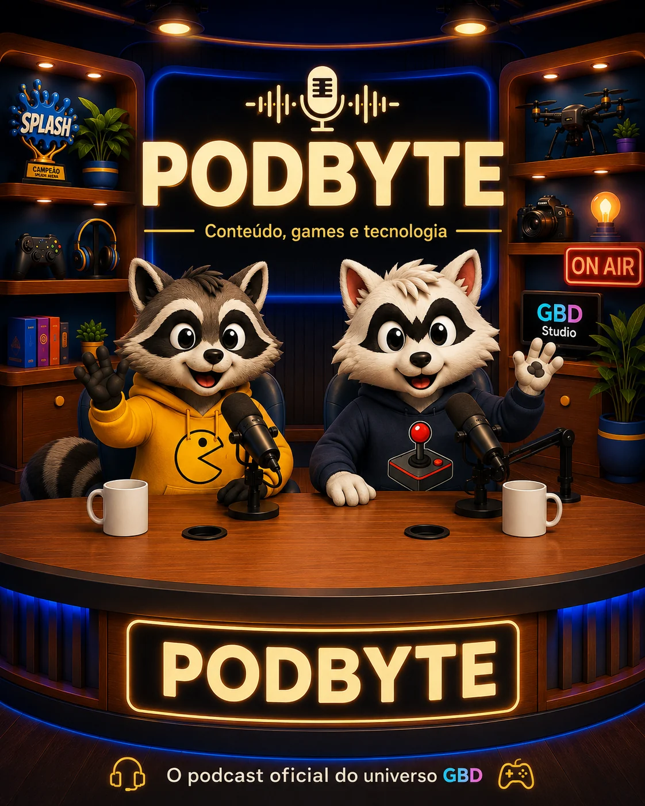

Temporada 1
Episódio 1
O Episódio 1 está em finalização de áudio. A versão visual está preservada e a estreia oficial será publicada quando as vozes de Byte e Mesh estiverem aprovadas.
EM FINALIZAÇÃO DE ÁUDIO - EM BREVE